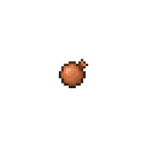
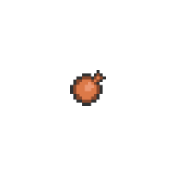

<body bgcolor="black">
<style>
figcaption {
  background-color: black;
  color: white;
  padding: 2px;
  text-align: center;
  font-family: "Comic Sans MS", "Comic Sans", cursive;
  font-size: 20pt;
}
</style>
</body>
<br><br><br><br><br><br><br><br>
<a onclick="my_audio_function();">
    <center>
     
     
    </center>
</a>
<figcaption>
↑
</figcaption>
<script>
	var checker = 0;
    var aAudio = new Audio('data/fart.mp3');
    document.getElementById('clicked').hidden = true
    function my_audio_function() {
    	if(checker == 0) {
        	aAudio.play()
        	document.getElementById('not_clicked').hidden = true;
    		document.getElementById('clicked').hidden = false
    		setTimeout(reverse, 400);
    		checker++
    	}
    }

    function reverse() {
    	document.getElementById('not_clicked').hidden = false;
    	document.getElementById('clicked').hidden = true
    	checker--	
    }
</script>